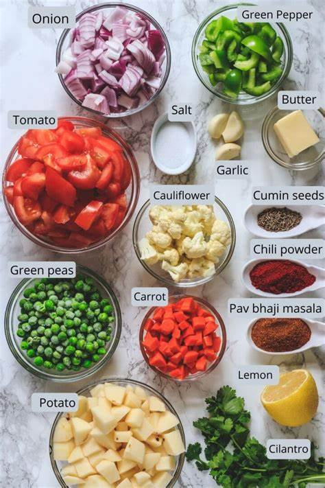
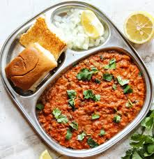

Pav Bhaji Recipe
Ingredients:

Instructions:
step1: Heat oil and butter in a large pan.
step2: Add chopped onions and sauté until golden brown.
step3: Stir in chopped tomatoes and cook until soft.
step4: Add capsicum, turmeric powder, red chili powder, and Pav Bhaji masala. Mix well.
step5: Add boiled vegetables (potatoes, cauliflower, and peas) and mash them together in the pan.
step6: Cook for 8-10 minutes, stirring occasionally. Add water if needed to adjust the consistency.
step7: Season with salt and garnish with fresh coriander leaves.
step8: Heat butter in another pan and lightly toast the Pav buns.
step9: Serve hot Bhaji with toasted Pav, lemon wedges, and extra butter on the side.
